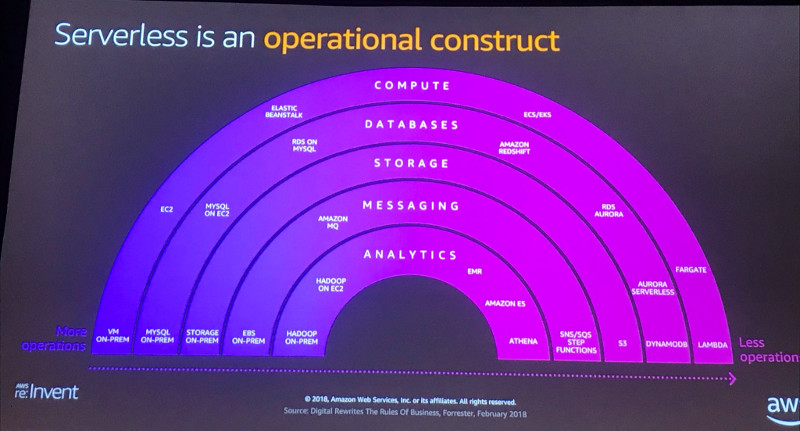

Interesting Videos from re:Invent 2018

(note: Step Functions belong to the compute section)
All Videos: https://gist.github.com/LukasMusebrink/631e80e07c6b2ee73dd373a3192fd0ef
Databases on AWS: The Right Tool for the Right Job (DAT205-R1)
https://www.youtube.com/watch?v=-pb-DkD6cWg
Exploring a purpose-built strategy for databases, where you choose the right tool for the job. Shawn explains why your application should drive the requirements of a database, not the other way around. We introduce AWS databases that are purpose-built for your application use cases. Learn why you should select different database services to solve different aspects of an application, and watch a demonstration in which application use cases lend themselves well to specific data services. If you’re a developer building modern applications that require high performance, scale, and functional databases, and you’re trying to determine which relational and non-relational data services to use, this session is for you.
Mapping usecases to a Database: relational, key-value, document, in-memory, graph, time-series, ledger.
Shawn Bice, VP of Non-Relational Databases at AWS

Mastering Identity at Every Layer of the Cake (SEC401-R1)
https://www.youtube.com/watch?v=vbjFjMNVEpc
Master identity at each layer of deliciousness: from platform, to infrastructure, to applications, using services like AWS Identity and Access Management (IAM), AWS Directory Service, Amazon Cognito, and many more. Leave with a firm mental model for how identity works both harmoniously and independently throughout these layers, and with ready-to-use reference architectures and sample code
Become an IAM Policy Master in 60 Minutes or Less (SEC316-R1)
https://www.youtube.com/watch?v=YQsK4MtsELU
Are you interested in becoming a IAM policy master and learning about powerful techniques for controlling access to AWS resources? If your answer is “yes,” this session is for you. Join us as we cover the different types of policies and describe how they work together to control access to resources in your account and across your AWS organization. We walk through use cases that help you delegate permission management to developers by demonstrating IAM permission boundaries. We take an in-depth look at controlling access to specific AWS regions using condition keys. Finally, we explain how to use tags to scale permissions management in your account. This session requires you to know the basics of IAM policies.
Choosing the Right Messaging Service for Your Distributed App (API305)
https://www.youtube.com/watch?v=4-JmX6MIDDI
In the cloud, modern apps are decoupled into independent building blocks, called microservices, which are easier to develop, deploy, and maintain. Messaging is a central tool used to connect and coordinate these microservices. AWS offers multiple messaging services, which address a variety of use cases. In this session, learn how to choose the service that’s best for your use case as we present the key technical features of each. We pay special attention to integrating messaging services with serverless technology. We cover Amazon Kinesis, Amazon SQS, and Amazon SNS in detail with discussion of other services as appropriate.
When to use SQS, SNS, and Kinesis
Advanced VPC Design and New Capabilities for Amazon VPC (NET303)
https://www.youtube.com/watch?v=fnxXNZdf6ew
Amazon Virtual Private Cloud (Amazon VPC) enables you to have complete control over your AWS virtual networking environment. Given this control, have you ever wondered how new Amazon VPC features might affect the way you design your AWS networking infrastructure, or even change existing architectures that you use today? In this session, we explore the new design and capabilities of Amazon VPC and how you might use them
Services Mentioned: * 18 more services are supported by privatelinks -https://docs.aws.amazon.com/vpc/latest/userguide/vpce-interface.html * VPC Sharing * AWS Global Accelerator
CI/CD for Serverless and Containerized Applications (DEV309-R)
https://www.youtube.com/watch?v=01ewawuL-IY
how to use AwsCodePipelines to develop a full CI/CD flow. A lot of new features that just got released are used in this demo. Using ECR as a action in AwsCodePipelines.
Modern app development: * Lambbda - serverless functions * Fargate - serverless containers
A Serverless Journey: AWS Lambda Under the Hood (SRV409-R1)
https://www.youtube.com/watch?v=QdzV04T_kec
Serverless computing allows you to build and run applications and services without thinking about servers. Serverless applications don’t require you to provision, scale, and manage any servers. However, under the hood, there is a sophisticated architecture that takes care of all the undifferentiated heavy lifting for the developer. Join Holly Mesrobian, Director of Engineering, and Marc Brooker, Senior Principal of Engineering, to learn how AWS architected one of the fastest-growing AWS services. In this session, we show you how Lambda takes care of everything required to run and scale your code with high availability
The Future of Enterprise Applications is Serverless (ENT314-R1)
https://www.youtube.com/watch?v=w_fZU6hSQkA
At re:Invent 2014, we announced AWS Lambda and ushered in a whole new world of application design, one without the need to manage or think about traditional server infrastructure. Since then, serverless has become one of the hottest topics in the industry. Customers like Capital One and Coca Cola talk about how serverless saved them time and money, helped them reduce their operational burden, and drove developer agility and innovation. What is serverless, and what are the key trends you should be aware of? Where does one start on the journey of building serverless applications? We cover all of this and more in this session.
Technology Choices for Modern Applications (SRV305-R1)
https://www.youtube.com/watch?v=IPOvrK3S3gQ
AWS offers a wide range of cloud computing services and technologies, but we rarely state opinions about which services and technologies customers should choose. When it comes to building our own services, our engineering groups have strong opinions, and they express them in the technologies they pick. Join Tim Bray, Senior Principal Engineer, to hear about the high-level choices that developers at AWS and our customers have to make. Here are a few: Are microservices always the way to go? Serverless, containers, or serverless containers? Is relational over? Is Java over? The talk is technical and based on our experience in building AWS services and working with customers on their cloud-native apps.
Introducing AWS App Mesh – service mesh on AWS (CON367)
https://www.youtube.com/watch?v=GVni3ruLSe0
AWS App Mesh is a service mesh that makes it easy to monitor and control communications for containerized microservices running on AWS. Join us to learn about how AWS can give you end-to-end visibility, and help manage traffic routing to ensure high availability for your services. We will cover the benefits of service mesh, capabilities provided by AWS App Mesh and how you can use AWS App Mesh with AWS, partner, and community tools.
Speakers: * Shubha Rao, Sr. Product Manager, AWS * Tony Pujals, Sr. Developer Advocat, AWS
How HSBC Uses Serverless to Process Millions of Transactions in Real Time (FSV305)
https://www.youtube.com/watch?v=_UiyIJqDXXQ
For large financial institutions, it can be extremely hard to predict when your architecture may need to scale to process millions of financial transactions per day. HSBC addressed this challenge by integrating its on-premises mainframe with AWS services such as AWS Lambda, Amazon Kinesis, and Amazon DynamoDB. This integration enables the bank to engage in real time with millions of retail banking customers in a more personal, dynamic, and useful way. The bank applies business logic to its transaction data, and it harnesses the information it gleans to communicate directly with customers through a messaging platform that runs on AWS. In this session, we share an architecture pattern that demonstrates how retail banks can add value by investing in their legacy system when integrating streaming data from on-premises systems to an event-driven, serverless architecture at scale. Complete Title: AWS re:Invent 2018: How HSBC Uses Serverless to Process Millions of Transactions in Real Time (FSV305)
Deploying Microservices using AWS Fargate (CON315-R1)
https://www.youtube.com/watch?v=4xqOoRPrnAw
KPMG have built a customer due diligence solution for a high-profile banking client in AWS. The solution is made up of a number of microservices which are deployed to containers using AWS Fargate. This presentation will dive into the details of the architecture of the solution, how the infrastructure and applications are deployed using third party tools such as Hashicorp’s Terraform and Jenkins, and the best practices when running containers in production workloads. The presentation will cover details on the AWS resources used in the solution, including DynamoDB, ECS, Fargate and S3, CI/CD and automation, with a focus around security to meet banking regulatory requirements. We will look at how KPMG have configured for canary deployments to ECS Fargate, how we manage secrets management and encryption, and how we manage service discovery between the microservices using ECS Service Discovery and Route 53.
Releasing Mission-Critical Software at Amazon (DEV209-R1)
https://www.youtube.com/watch?v=I61KKO1rAQ8
A deeper look at Amazon’s approach to releasing mission-critical software. In this session, we take a journey through the release process of an AWS Tier 1 service on its way to production. We follow a single code change from idea to release, and we focus on how Amazon updates critical software quickly and safely for its global customers. Throughout the talk, we demonstrate how our internal software release processes map to AWS developer tools, and we highlight how you can leverage AWS CI/CD services to create your own robust release process.
Agenda: 1. Technical and cultural approach 1. Tooling 1. Code review, build, and pre-mortem 1. Pipeline and deployment 1. Manage infrastructure, and auditing
Speaker: Andy Troutman, Senior Manager, AWS Deployment Services
Infrastructure Is Code with the AWS Cloud Development Kit (DEV372)
https://www.youtube.com/watch?v=Lh-kVC2r2AU
The AWS Cloud Development Kit (AWS CDK) is a new open-source framework from AWS that enables developers to harness the full power of modern programming languages to define reusable cloud components and applications and provision them through AWS CloudFormation. The AWS CDK is shipped with a rich class library that encapsulates the details-defining infrastructure on AWS and enables you to focus on your application. In this session, we discuss why we decided to build the AWS CDK; we describe some of the high-level concepts; and we write some code on stage to demonstrate why we think the AWS CDK is going to be your best friend.
Speakers: * Elad Ben-Israel, Principal Engineer, AWS Developer Tools * Jason Fulghum, Development Manager, AWS Developer Tools
Resources: * https://cdkworkshop.com/ * https://awslabs.github.io/aws-cdk/ * https://github.com/awslabs/cdk-reinvent
Applying Principles of Chaos Engineering to Serverless (DVC305)
https://www.youtube.com/watch?v=tYJDfsTklH0
Chaos engineering focuses on improving system resilience through controlled experiments, exposing the inherent chaos and failure modes in our system before they manifest in production and impact users. However, much of the publicized tools and articles focus on killing Amazon EC2 instances, and the efforts in the serverless community have been largely limited to moving those tools into Lambda functions. How can we apply the same principles of chaos to a serverless architecture built around AWS Lambda functions? Can we adapt existing practices to expose the inherent chaos in these systems? What are the limitations and new challenges that we need to consider? Come to this session and find out.
Speaker: Yan Cui, the guy who runs The Burning Monk podcast.
From Monolith to Modern Apps: Best Practices (SRV322-R2)
https://www.youtube.com/watch?v=bWcpmJCFhTM
We are a lean team consisting of developers, lead architects, business analysts, and a project manager. To scale our applications and optimize costs, we need to reduce the amount of undifferentiated heavy lifting (e.g., patching, server management) from our projects. We have identified AWS serverless services that we will use. However, we need approval from a security and cost perspective. We need to build a business case to justify this paradigm shift for our entire technology organization. In this session, we learn to migrate existing applications and build a strategy and financial model to lay the foundation to build everything in a truly serverless way on AWS.
What’s New in Amazon EC2, Containers, & Serverless (CMP207-L)
https://www.youtube.com/watch?v=cb0KvqGjXRE
Matt Garman introduces the latest innovations in the compute space. In this keynote address, we announce new compute capabilities, and we share insights into what makes the AWS compute business unique. We also announce new capabilities for Amazon EC2 instances, EC2 networking, EC2 Spot Instances, Amazon Lightsail, Containers, and Serverless. Matt is joined by executives from our customers and partners who share valuable success stories of how Amazon EC2 has helped their journey to digital transformation. Complete Title: AWS re:Invent 2018: AWS Compute Leadership Session: What’s New in Amazon EC2, Containers, & Serverless (CMP207-L)
Speaker: Matt Garman, VP of AWS Compute Services
Operational Excellence w/ Containerized Workloads Using AWS Fargate (CON320-R1)
https://www.youtube.com/watch?v=rtk3rRdAZ6s
This session will focus on how leveraging Fargate and its serverless approach to deploying and managing containers will help increase operational efficiencies and reduce the time to ramp up your operations to run production containerized workloads. Datree will share their journey to adopt containers and the steps they were able to accelerate and avoid by using Fargate as well do a demo. Complete Title: AWS re:Invent 2018: [REPEAT 1] Operational Excellence with Containerized Workloads Using AWS Fargate (CON320-R1)
Using DevOps, Microservices, & Serverless to Accelerate Innovation (SRV325)
https://www.youtube.com/watch?v=eXl6Bumksnk
Learn how AWS can help you innovate faster with DevOps, microservices, and serverless. Join us for a rare and intimate discussion with AWS senior leaders: David Richardson, VP of Serverless, Ken Exner, director of AWS Developer Tools, and Deepak Singh, director of Compute Services, Containers, and Linux. Hear them share development best practices and discuss key learnings from building modern applications at Amazon.com. Also, learn how developers can leverage containers, AWS Lambda, and developer tools to build and run production applications in the cloud. Complete Title: AWS re:Invent 2018: Leadership Session: Using DevOps, Microservices, & Serverless to Accelerate Innovation (SRV325)
Speakers: * David Richardson, VP serverless * Deepak Singh, Diroctor Containers and Linux * Ken Exner, Director AWS Developer Tools